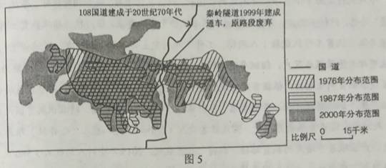

None - Fade - Slide - Convex - Concave - Zoom
选择班级
幻灯片样式
Black (default) -
White -
League -
Sky -
Beige -
Simple
Serif -
Blood -
Night -
Moon -
Solarized
庄园经济是一种实现农业资源聚集化、生产规模化、经营多元化、管理企业化、建设生态化的经营组织模式。某县生产的优质铁观音茶获得“中国地理标志”认证。该县茶企业通过整合特色山水，建设集茶种植、茶叶加工储存、旅游和文化为一体的现代茶庄园。据此完成1—2题。
1.发展庄园经济的前提条件是当地拥有
A 丰富廉价的劳动力
B 知名品牌的农产品
C 发达便捷的交通网
D 高精尖的技术水平
试题分析： 1.由材料中“庄园经济是一种实现农业资源工业化的经营模式”，说明农业资源为关键，某县以获得“中国地理标志”标志认证的优质茶叶为中心，建设了现代茶庄园，说明农产品的知名度和质量是得到市场认可的前提，在此基础之上，才能扩大规模，加强农产品品牌建设，促进农产品的加工增值，提高农产品的市场竞争力。也才能用工业化理念谋划农业发展提高农业经济效益。而丰富廉价的劳动力、 发达便捷的交通网 、 高精尖的技术水平是可以促进茶园发展的条件，而不是前提条件。
2.与传统的茶园相比，现代茶庄园的突出优势是
A 品牌更多，环境更优
B 市场更广，产品价格更低
C 产品更多，效益更高
D 投入更少，生产成品更低
试题分析： 2.传统的茶园的产品主要以茶叶为主，现代茶庄园以茶为中心，延长茶的加工、储藏、销售等各环节，增加了产品种类，同时还结合当地的自然环境和茶文化发展旅游业，增加了农业的经济效益。 考点：现代农业的发展条件和意义。
自20世纪70年代开始，日本家电企业将组装工厂向某国外转移，图1示意日资家电组装工厂转移目的地随时间的变化。据此完成3-5题。
3.影响日资家电组装工厂不断转移的主要因素是
A 市场规模
B 劳动力成本
C 原材料成本
D 技术水平
4.20世纪90年代末，越南对日资家电组装工厂的投资吸引力已超过中国，但其日资家电组装工厂数量却远少于中国，主要原因是中国
A 市场规模大
B 技术水平高
C 劳动力素质高
D 基础设施水平高
5.在日资家电组装工厂向越南等国家转移的背景下，中国家电产业发展的战略是
A、加大政策支持，吸引日资回归
B、 进口越南产品，替代国内生产
C、 扩大生产规模，保持价格优势
D、 加强技术研发，培育竞争优势
在全球气候变暖的背景下，我国长白上高山苔原带矮小灌木的冻害反而加剧，调查发现，长白山雪期缩短；冻害与坡度密切相关，而与海拔基本无关；西北坡为冻害高发区。据此完成6-8题。
6.在高山苔原带，与坡度密切相关，而与海拔基本无关的指标是
A、大气温度
B、降水量
C、积雪厚度
D、植被覆盖度
试题分析： 6.在高山苔原带，大气的温度随海拔升高而降低，所以与海拔有关；降水量随海拔的升高先增；多在减少；坡度大积雪厚度小，坡度小，积雪的厚度大，与坡度有关，与海拔无关，；坡度大小影响土层薄厚，海拔高低影响气温，土层和温度都会影响植被的生长。
7.长白山西北坡比其他坡向冻害高发，是因为该坡
A、年降水量最少
B、冬季气温最低
C、 年日照最少
D、冬季风力最大
试题分析： 7.由上题可知，雪期缩短会加剧冻害。长白山为东北西南走向，西北坡为冬季风的迎风坡，风力大，积雪薄，且易被风力吹散，导致冻害加剧。
8．气候变暖但冻害加剧的原因可能是
A、蒸腾加剧
B、低温更低
C、 降雪期推后
D、太阳辐射减弱
试题分析： 8.气候变暖，降雪的条件不易形成，使得雪期退后，且变短，裸露的矮小灌木，缺少积雪的覆盖，使得冻害加剧。
某河流位于浙江东部，下游河床受径流与潮汐共同影响：枯水期，以潮流带来的泥沙淤积为主；汛期，上游下泄的泾流冲刷河床。图2示意该河下游某地1962年两个时期河床断面形态，其中，甲是河床最低时期的河床断面。1964年在该河上游建成水库；2000年，在该河河口建成大型水闸。据此完成9~11题。
9.河床断面形态从甲至乙的变化过程发生在
A.1~3月
B.3~6月
C.6~9月
D.9~12月
10.水库竣工后，水库下游河流
A.径流量增大
B.河道淤积
C.流速加快
D.河床展宽
11.在该河河口修建大型水闸的主要作用是
A.切断潮流泥沙补给
B.加速汛期洪水下泄
C.提高潮流冲淤能力
D.拦截河流入海泥沙
36.阅读图文材料，完成下列要求。（24分）
罗讷河发源于瑞士境内的冰川，在发过境内的流域面积占总面积的94%，历史上曾是一条“野性”河流，经常洪水泛滥。19世纪以来，法国对罗讷河进行多次整治，并于1931年成立“国立罗讷河公司”，作为罗讷河综合整治和开发的唯一授权机构，图4示意罗纳河流域的地形。
（1）分别之处罗讷河上游（瑞士境内）、北部支流（索恩河）和地中海沿岸支流径流量的季节变化。（9分）
（1）上游（瑞士境内）：有春汛，夏季径流量大，冬季为枯水期。 北部支流(索恩河):全年径流量比较稳定，无明显枯水期。 地中海沿岸支流:夏季为枯水期，冬季为丰水期。(本小题共9分)
(1)该题主要考查影响河流水文特征的因素，河流经流量的变化与河流的补给类型和流域内的水利工程、植被覆盖率、湖泊数量、湿地分布等事物的调节有关，结合材料和图示信息，可以知道该河上游主要在瑞士境内，由于季节性积雪融水和冰川融水补给，有春汛，夏季温度高，径流量大，冬季气温低，为枯水期。 北部支流(索恩河)主要位于温带海洋气候区，全年降水均匀，所以全年径流量比较稳定，无明显枯水期。 地中海沿岸支流，受地中海气候的影响，夏季降水多，冬季降水少，因此夏季为枯水期，冬季为丰水期。
（2）表1列出罗讷河整治不同阶段的主要措施。请在下列整治和开发目标中进行选择，完成表1。请将选出的各整治和开发目标填写在答题卡的相应位置。（5分）整治和开发目标：防洪 改善水质 发电 增加生物多样性 土地开发 开采河沙 改善航运条件
（2）①改善航运条件 防洪 ②发电 改善航运条件 土地开发（防洪）本小题共5分
（3）说明法国为整治和开发罗讷河而设立“国立罗讷河公司”的原因。（4分）
（3）因为河流跨多个行政区，涉及水资源利用、航运、防洪、发电、土地利用等多方面的利益，由国家唯一授权机构才能协调各行政区、各部门的利益，并从河流整体进行综合整治，以实现整治效益最大化。(本小题共4分)
（4）说明“恢复弯曲河道及河道分汊”对恢复河流生态的作用。（6分）
4）恢复河流的自然状态(自然河道、沿岸湿地等)，扩展河道宽度，延长河流长度，降低河流流速和洪水峰值；恢复河流生态系统，增加生物多样性；增强河流的自然生产力和对污染的净化能力。(本小题共6分)
37、阅读图文材料，完成下列要求。（22分）
陕西南部的秦岭地区是我国大熊猫分布的重点区域。该地区曾经是重要的林木采伐区，20世纪70年代开始先后有多家森工企业在该区内进行采伐作业，1998年后全面停止采伐天然林。图5示意1976年、1987年和2000年该地区大熊猫栖息地范围的变化。
（1）、描述该地区大熊猫栖息地范围的变化。
（1）20世纪70年代（1976年），栖息地练成一片；到80年代后期（1987年）面积退缩，碎片化严重；90年代至21世纪初（2000年），栖息地面积碎片化趋势减弱，分布范围有向北、向西扩展的趋势。（本小题共7分）
（2）、分析导致该地区大熊猫栖息地范围变化的人为原因。
（2）大规模采伐森林（对植被破坏大），导致栖息地缩小；修建道路（国道林区采伐道路），导致栖息地碎片化；人类干扰活动大幅度减少（全面停林，108国道秦岭隧道通车等），植被得到了较快恢复，促进大熊猫栖息地与扩展。（本小题共9分）
（3）、说明协调道路建设与野生动物栖息地保护的主要途径。
（3）合理规划，道路选线尽量避开野生动物栖息地；在经过野生动物栖息地时，野生动物穿越道路的生态廊道；修建道路时尽量减少周边植被的破坏，保护道路施工遭破坏的植被。（本小题共6分）
42 篁岭（图7）是美丽的山居村落，位于婺源东北部，篁岭因“晒秋”闻名遐迩。当秋日的阳光把晒楼唤醒的时候，一家家晒楼把鲜红的辣椒，翠绿的豆角，金黄的玉米、稻谷、黄豆……晒起来，让整个山村变成色彩斑斓的画卷。篁岭人家“晒秋”没什么讲究，赶上什么就晒什么，恨不得把整个秋天的收获都晒起来。
分析“篁岭晒秋”的旅游价值及开发的有利条件。
旅游价值：篁岭晒秋是独特的民俗文化现象，民俗文化产品价值高；（2分）篁岭晒秋具有较高的观赏价值、体验价值、购物和农家乐开发价值等。（2分） 有利条件：（篁岭晒秋）旅游产品独特，与附近旅游景点的旅游产品差异明显，可以实现产品互补；（3分）接近著名旅游景点（婺源、景德镇等），客源有保障。（3分
试题分析： 该题主要考查旅游价值及开发的有利条件分析，游览价值有 独特性 多样性 质量高底 地域组合状况 开发条件包括 游览价值 社会经济条件 交通通达性 距客源市场的远近 地区接待能力和环境承载力等等。 考点：旅游价值及开发的有利条件分析。
43，（10分）自然灾害与防治
江苏省里下河地区总面积1.35万平方千米，平均海拔2～3米，其东面的通榆运河比里下河地区高1～2米，北面的黄河故道比里下河地区高5米，南面是新通扬运河和沿江高沙地，西面是高耸的京杭运河大堤，因此里下河地区易发洪涝灾害，图8示意里下河地区位置和河网分布。
提出里下河地区防治洪涝灾害的措施。
开挖入海新河，改造河网，分散水流；（3分）建设水利枢纽工程，洪涝期间排水；（3分）修筑蓄洪 （水库），加强湖泊对洪水的调节能力；退耕还湖；加强预报监测；加强宣传教育，提高防灾、减灾意 识。（4分，答出其中2项即可得满分。其他合理答案可酌情评分，但本部分不得超过4分
44、（10分）环境保护
随着电子商务的快速发展，我国快递业保持高速发展的趋势。2015年我国快递业务量完成206亿件，同比增长48％，快递业务收入完成2760亿元。与此同时，由快递业带来的环境污染问题也日益突出。
说明废弃的快递外包装可能带来的主要环境污染问题，并提出解决措施。
环境污染问题：快递外包装会产生大量的包装盒（袋）、胶带等固体废弃物；不可降解的包装塑料袋和胶带等会对环境造成污染。（4分） 解决措施：推广使用环保的外包装材料，实行绿色包装；（2分）在确保货物不受损坏的情况下，实行适度包装；（2分）对外包装中的纸张（纸盒）等可利用废弃品，实行分类回收。（2分） （其他合理答案可酌情评分，但本部分不得超过6分。）
试题分析： 该题主要考查旅游价值及开发的有利条件分析，游览价值有 独特性 多样性 质量高底 地域组合状况 开发条件包括 游览价值 社会经济条件 交通通达性 距客源市场的远近 地区接待能力和环境承载力等等。 考点：旅游价值及开发的有利条件分析。